Двенадцать работ в двенадцати нишах
Работы
Чтобы смотреть сайт в своей отрасли, а не представлять на чужом примере.
Компании на этих сайтах вымышленные: это демонстрационные работы студии, а не сайты реальных фирм. Цены — ориентир по рынку, фотографии из фотобанков. Каждая работа открывается целиком, с телефона тоже.
-
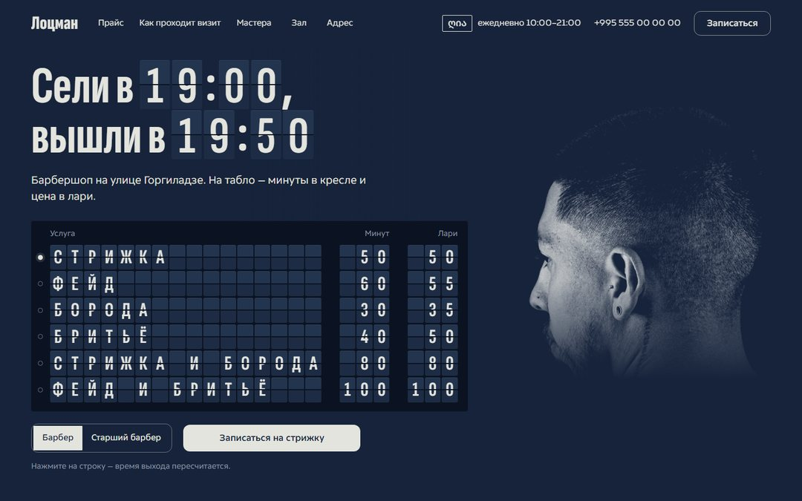
Красота Лоцман барбершоп, Батуми Вместо прайса — портовое табло отправлений с перекидными буквами. Открыть сайт -
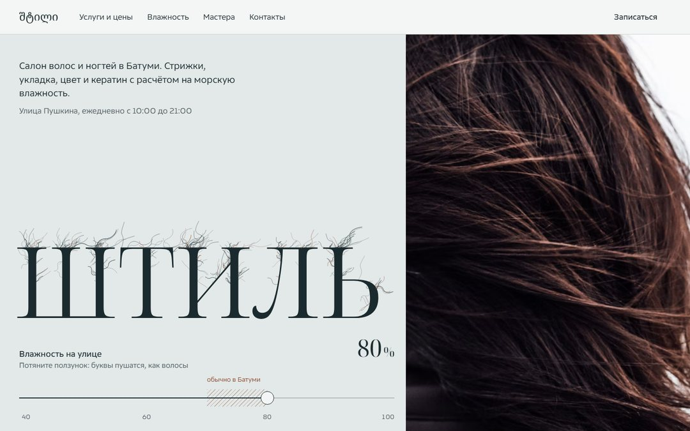
Красота Штиль салон волос и ногтей, Батуми Сайт построен вокруг главной беды приморского города — влажности. Открыть сайт -
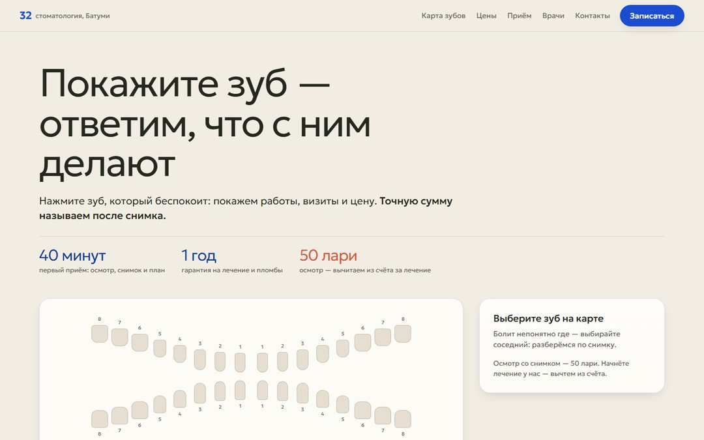
Здоровье Тридцать два стоматология, Батуми Вместо прайса-простыни — карта всех тридцати двух зубов. Открыть сайт -
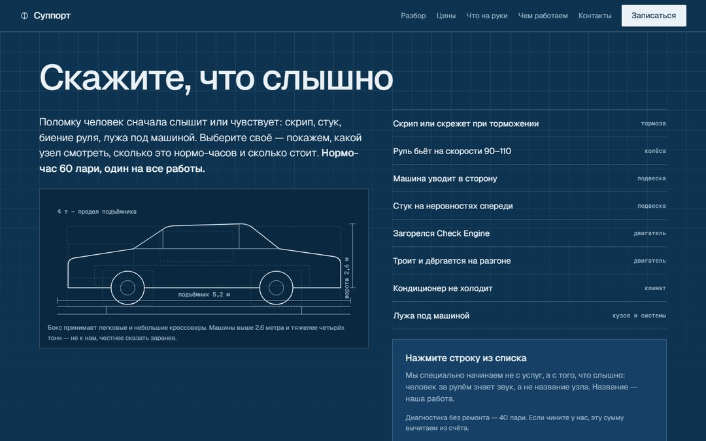
Авто Суппорт автосервис и детейлинг, Батуми Сайт-чертёж: сервис говорит с клиентом размерными линиями и нормо-часами. Открыть сайт -
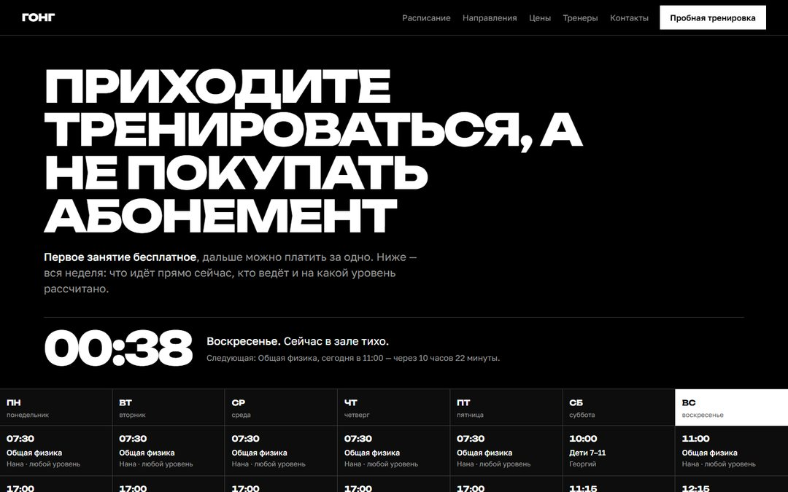
Спорт Гонг зал единоборств, Батуми Главный экран — не фото качка, а неделя зала: что идёт прямо сейчас. Открыть сайт -
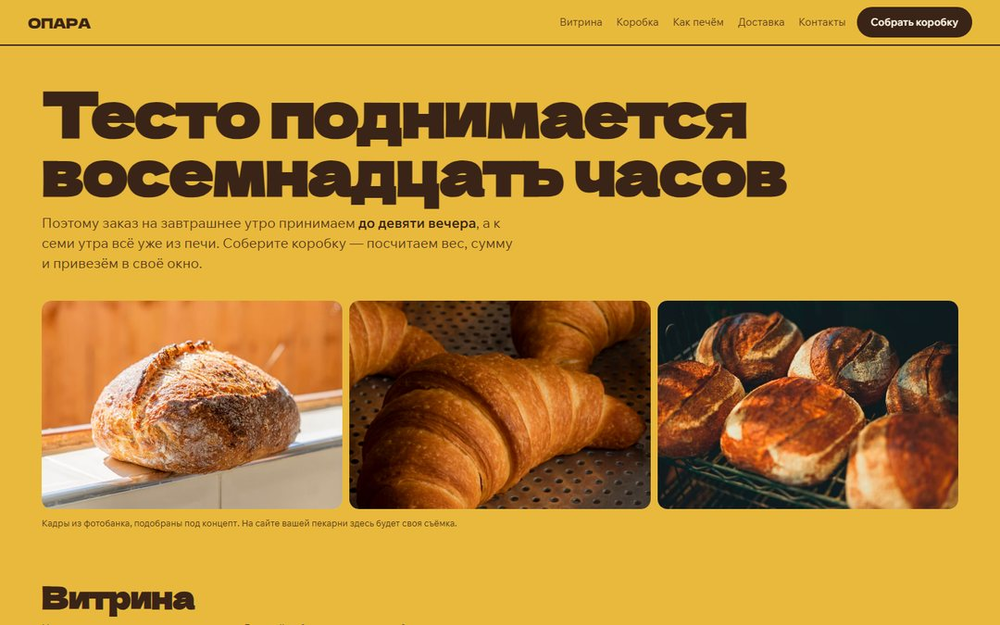
Еда Опара пекарня-кофейня с доставкой, Батуми Охряная заливка вместо белого фона и витрина вместо меню-списка. Открыть сайт -
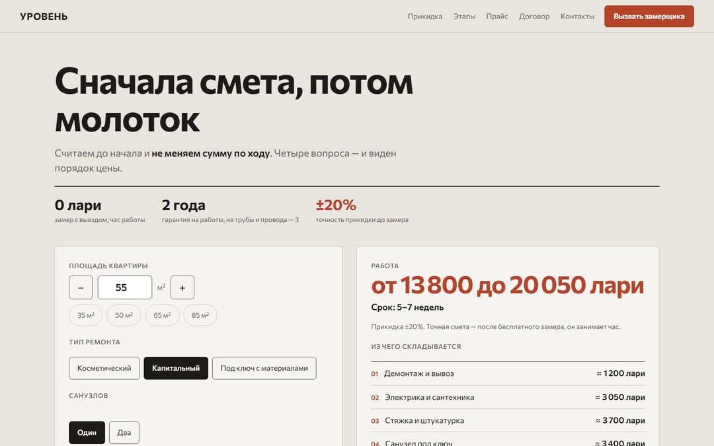
Дом и ремонт Уровень ремонт квартир, Батуми Сайт бригады, устроенный как смета: работа, единица, цена. Открыть сайт -
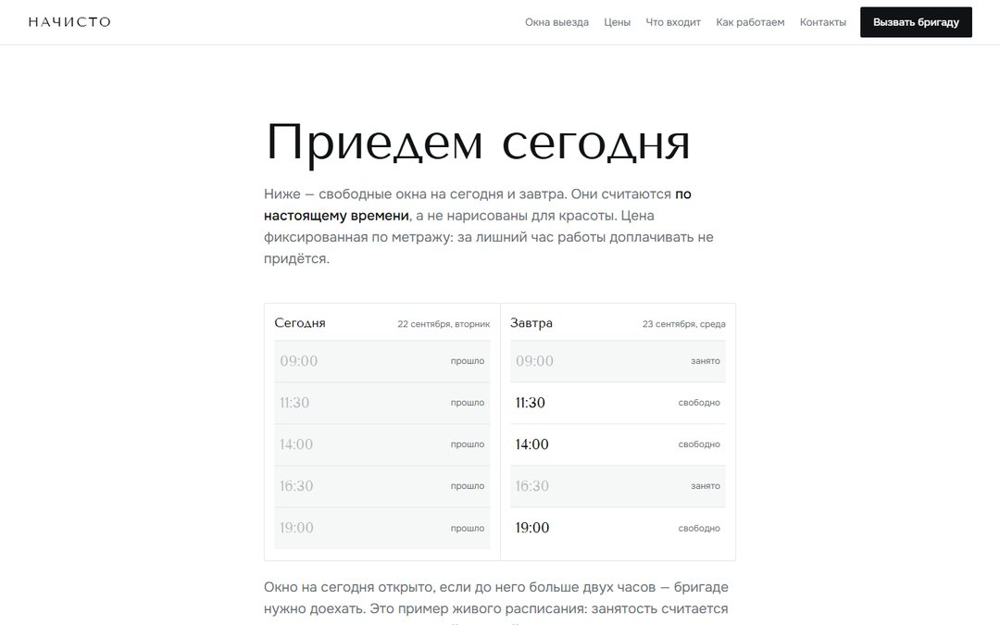
Дом и ремонт Начисто клининг, Батуми Белый лист без цветного акцента: цвет есть только в фотографиях. Открыть сайт -
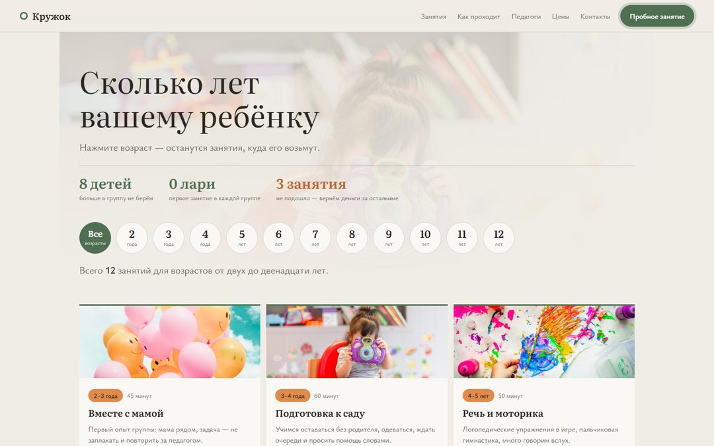
Дети Кружок детский центр, развивающие занятия Забота без мультяшности: спокойные цвета и книжная антиква. Открыть сайт -
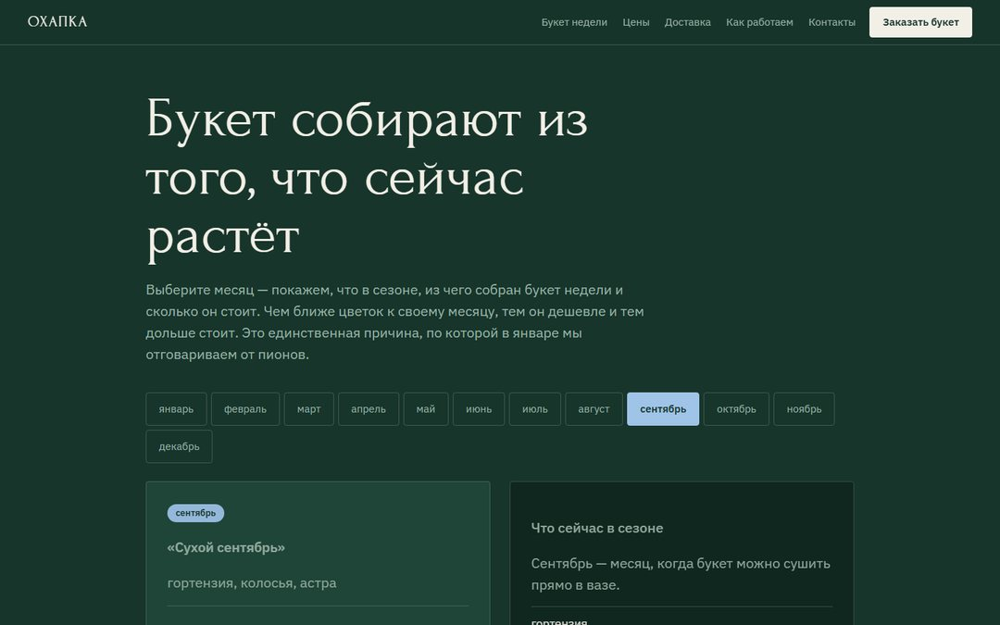
Красота Охапка цветочная мастерская Тёмная хвойная заливка, на которой цветы читаются как на витрине флориста. Открыть сайт -
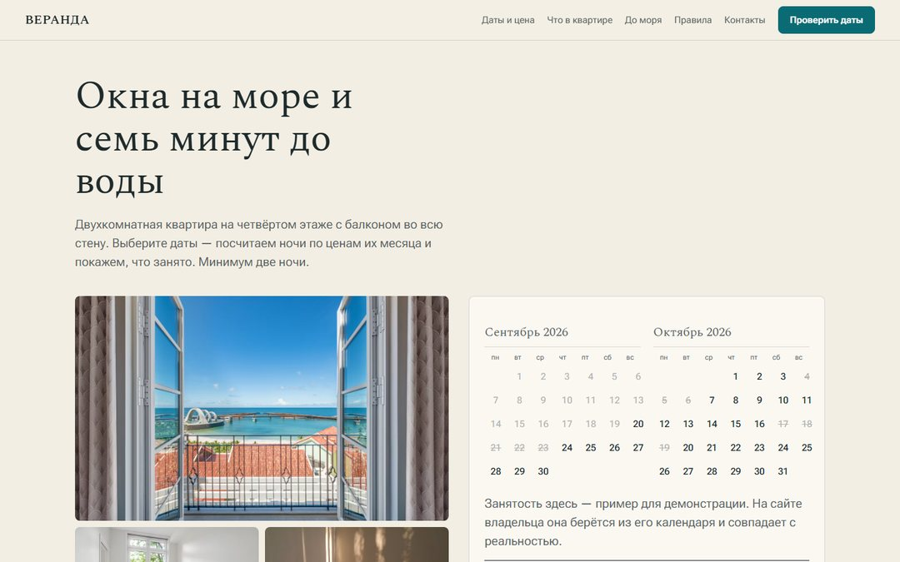
Жильё Веранда апартаменты у моря, Батуми Свет и вид вместо «уютных апартаментов»: песок, морская волна и большие окна. Открыть сайт -
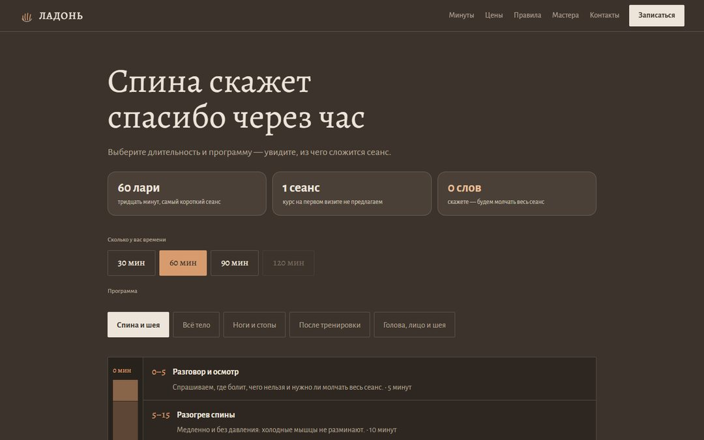
Здоровье Ладонь массаж, Батуми Тёплая тёмная страница без единого «релакс-клише»: ни свечей, ни камней. Открыть сайт